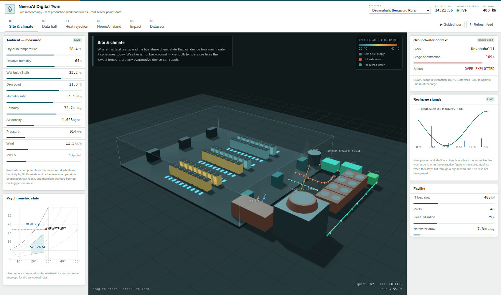
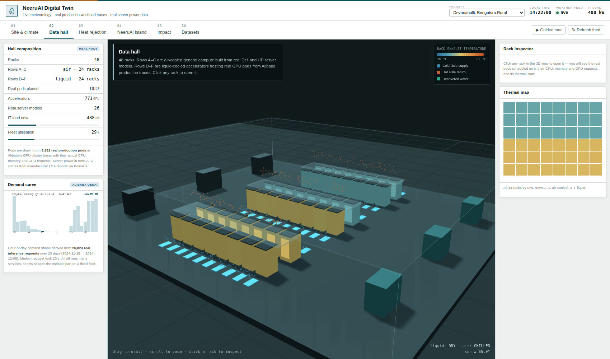
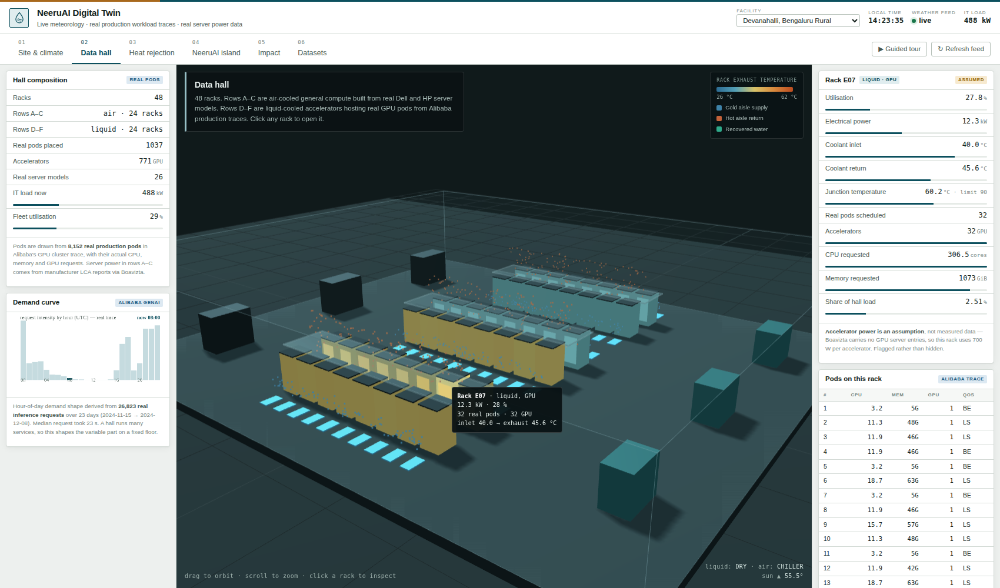
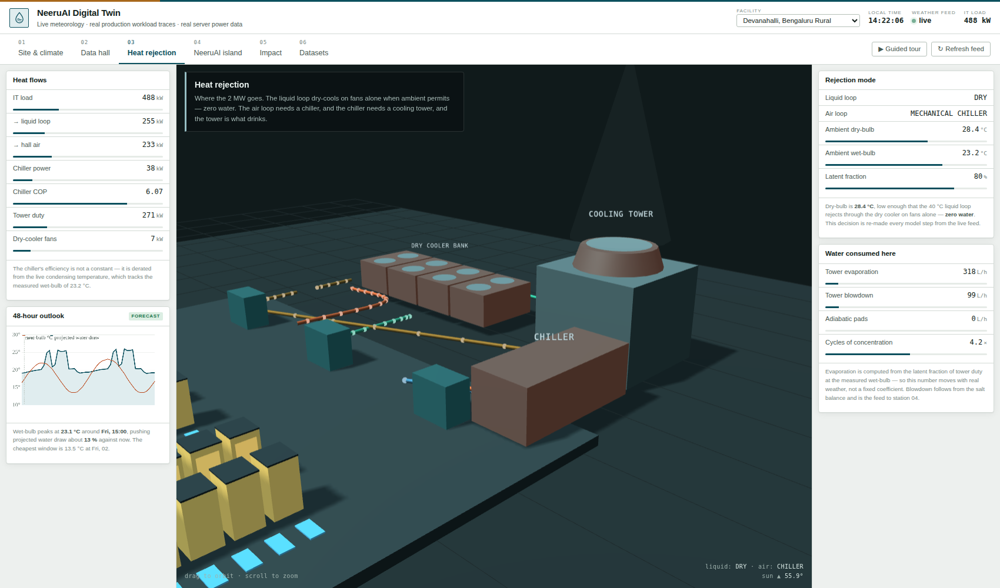
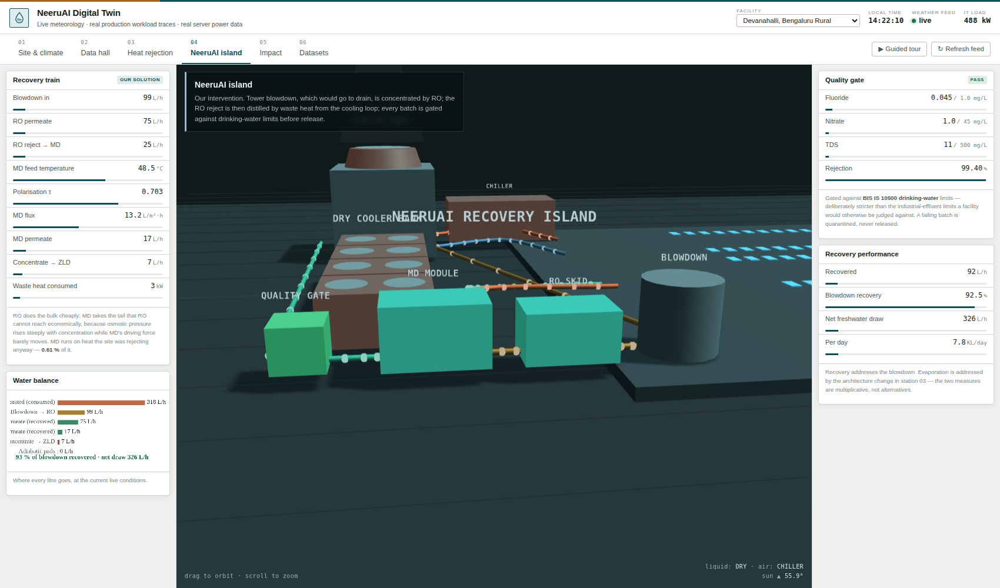
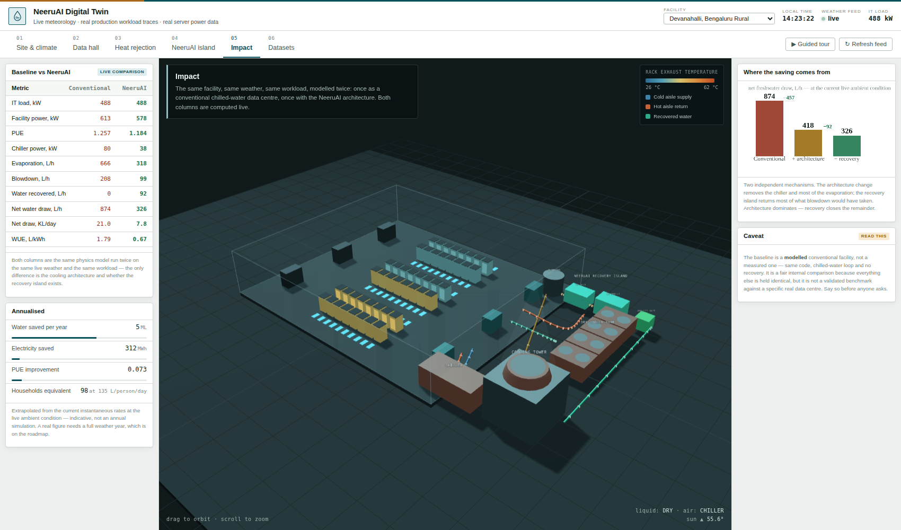
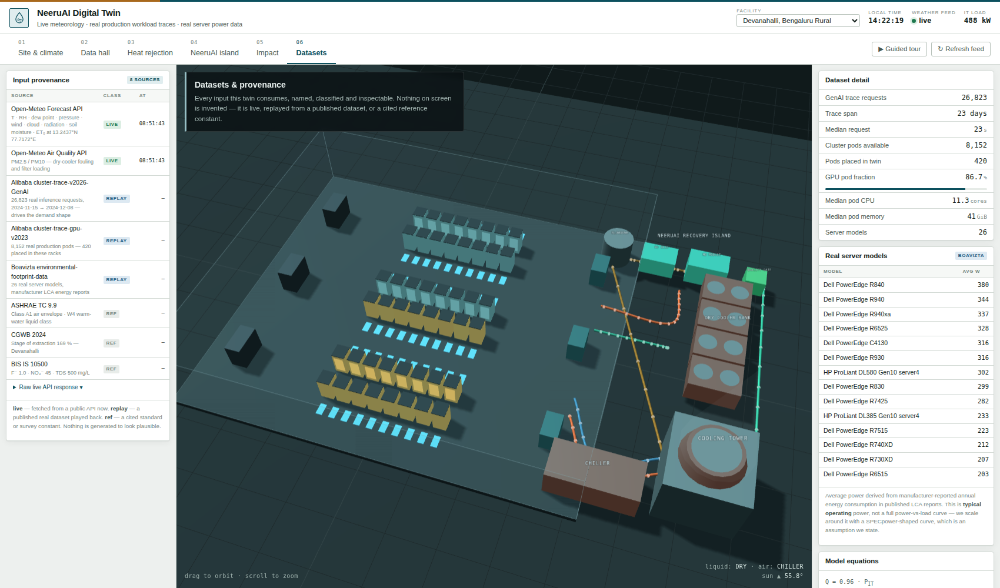
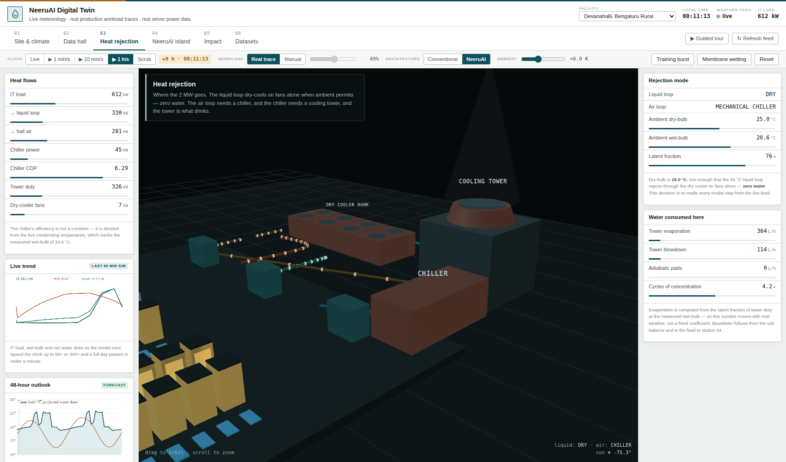

01What a digital twin actually is
A dashboard shows you numbers. A digital twin is a running model of a specific physical thing, fed by real inputs, that stays in step with it and can be asked "what if".
Four properties separate the two, and this build has all four. If your sir asks "how is this not just a dashboard?", these are the four answers:
| Property | How this twin has it |
|---|---|
| A specific physical referent | Five real Indian sites with real coordinates. Devanahalli is a real block at a real 169 % stage of groundwater extraction. |
| Live coupling to reality | Weather is fetched now, from the site's actual latitude and longitude, and refreshed every ten minutes. |
| A physical model, not a lookup | One chain of equations runs everything. Change any input and every downstream number moves consistently, because they are computed, not stored. |
| Counterfactual capability | Station 05 runs the same model twice — conventional facility and NeeruAI facility — on identical weather and workload. That is a "what if", which a dashboard cannot do. |
"It's a twin rather than a dashboard because there is one physics model underneath all six screens. Nothing is stored and displayed — every number is computed from live weather and real workload data, so if I change the cooling architecture on one screen, the water consumption on another screen moves for a physical reason."
02The data problem, honestly
You asked for no dummy data. Here is the honest position, and it is a stronger one than pretending.
No data centre publishes live telemetry. Rack temperatures, coolant flows and water meters are commercially sensitive and, in India, not even reported to regulators. If anyone claims a twin with live data-centre telemetry, ask them for the endpoint.
So the question becomes: what is the most real thing you can actually get?
The answer is that a data centre's cooling behaviour is dominated by one external variable you can get live and free: the weather at the site. Ambient wet-bulb temperature fixes the lowest temperature any evaporative device can reach, which fixes evaporation, which fixes water consumption and PUE. That is not a decoration around the model — it is the boundary condition the model is most sensitive to.
Everything else is then sourced from published real data rather than invented, and labelled by class:
| Class | Meaning | Used for |
|---|---|---|
| live | Fetched from a public API right now, timestamped | Weather, air quality, soil moisture, forecast |
| replay | A published real dataset played back against the clock | Workload demand, pod composition, server power |
| ref | A cited standard or survey constant | ASHRAE envelopes, BIS limits, CGWB extraction |
Station 06 lists every source with its class and fetch time, and lets you open the raw API response. That provenance labelling is itself a feature — it is exactly what the NeeruAI project argues Indian data centres are missing.
03The three real datasets
A · Live meteorology — Open-Meteo live
A free, keyless, CORS-enabled meteorological API. The twin calls it with the selected site's real latitude and longitude and pulls dry-bulb temperature, relative humidity, dew point, surface pressure, wind, cloud cover, shortwave radiation, precipitation, shallow soil moisture and reference evapotranspiration — plus a 72-hour hourly forecast and 24 hours of past data. A second call pulls PM2.5 and PM10.
If the fetch fails, the twin falls back to the last successful real fetch stored in the browser and labels itself cached. It never silently substitutes invented numbers.
B · Real production workload — Alibaba cluster traces replay
Two distinct traces from Alibaba's published cluster data, doing two different jobs:
Demand shape
cluster-trace-v2026-GenAI — 26,823 real inference requests over 23 days (Nov–Dec 2024), with real timestamps and execution times. Aggregated by hour of day, this gives the real diurnal demand curve you see in station 02.
Median request took 23 s. This is a generative-AI inference service — exactly the workload category driving Indian data centre growth.
Workload composition
cluster-trace-gpu-v2023 — 8,152 real production pods with their actual CPU, memory and GPU requests. 1,037 of them are placed into the twin's racks, so when you click a rack you see genuine scheduled workloads.
86.7 % carry accelerators; median pod asks for 11.3 cores and 40 GiB.
The GenAI trace is one service, so its hourly profile drops to near zero in the middle of the day. A real hall runs many tenants and never idles completely. So the twin uses the trace shape for the variable part of demand on top of an always-on floor: u = 0.28 + 0.62 · shape(hour). The shape is real; the floor is a modelling choice, and you should say so.
C · Real server power — Boavizta replay
An open dataset compiled from manufacturer life-cycle assessment reports. The twin uses 26 real server models — Dell PowerEdge R840, R940, R740XD, HP ProLiant DL580 and others — with their reported annual energy consumption converted to average power (168–380 W).
Rows A–C of the hall are populated with these real machines, and rack power is anchored to their real figures rather than assumed.
1. The reported figure is typical annual power, not a full power-versus-load curve. The twin anchors to it at 40 % utilisation and scales around it with a SPECpower-shaped curve — that curve shape is an assumption.
2. Boavizta carries no GPU server entries. So the accelerated racks in rows D–F use an assumed 700 W per accelerator. The twin labels those racks assumed and the general racks measured, in the rack inspector. Point at that label yourself — it shows you know where your data stops.
Station 01Site & climate

Establishes where and under what atmospheric conditions. This is the station that makes the point that weather is the physics, not the backdrop.
Left — Ambient, measured
Ten live quantities. Dry-bulb, humidity and dew point come straight from the API. Wet-bulb is computed from dry-bulb and humidity by Stull's empirical relation. Humidity ratio, enthalpy and moist-air density follow from psychrometric identities at the measured barometric pressure — which at Devanahalli is around 915 hPa, not 1013, because the site is roughly 900 m above sea level. That altitude correction matters and is in the model.
Left — Psychrometric chart
The live outdoor state plotted as a point, with the saturation curve, relative-humidity curves, and the ASHRAE A1 recommended envelope shaded. The blue marker on the saturation line is the wet-bulb. A mechanical examiner will recognise this chart immediately, and seeing a live point on it is persuasive.
Right — Groundwater context and recharge signals
The CGWB stage of extraction for the selected block, and a live chart of precipitation and shallow soil moisture from the same feed. The argument: extraction is measured against recharge, and recharge is what rainfall and soil moisture drive. When that chart stays flat through a dry season, the 169 % is not being repaid.
"Wet-bulb is the number that matters. It's the coldest any evaporative device can get, so it sets how much water this facility has to evaporate to reject its heat. It's live, and it's why the water number on the other screens moves during the day."
Station 02Data hall

The inside of the building. 48 racks in three pods, deliberately a mixed fleet, because that is the Indian reality and because the two halves reject heat through completely different paths.
| Rows | Type | Populated from | Power source |
|---|---|---|---|
| A – C | Air-cooled general compute | 36 real Dell / HP servers per rack, plus real non-GPU pods | measured manufacturer LCA |
| D – F | Liquid-cooled accelerators | Real GPU pods until 32 accelerators are placed | assumed 700 W per accelerator |
What is animated, and why
- Rack colour — real computed exhaust temperature, on the ramp in the legend. Air rows and liquid rows sit in visibly different bands because they genuinely run at different temperatures.
- Blue particles rising from the floor — cold supply air through perforated tiles in the cold aisles.
- Orange particles above the racks — hot exhaust rising in the contained hot aisles. Particle speed scales with fleet utilisation.
- Translucent panels over each pod — hot-aisle containment. The model uses 3 % recirculation with containment and 20 % without.
Click a rack

The inspector opens with that rack's utilisation, power, inlet and exhaust temperature, junction temperature against the 90 °C device limit, and a table of the real Alibaba pods scheduled on it with their actual CPU, memory and GPU requests. For a general rack it also lists the real server models inside.
"These aren't invented workloads. Each of these rows is a real pod from Alibaba's production GPU cluster, with the CPU and memory it actually requested. There are 1,037 of them placed across this hall."
Station 03Heat rejection

Where the electricity goes after it becomes heat — and where the water is consumed.
The plant has three elements: a dry cooler bank serving the liquid loop, a chiller serving the air loop, and a cooling tower rejecting the chiller's heat. Fans spin at a rate scaled to load; a vapour plume appears above the tower only when evaporation is actually happening.
The decision the twin makes every step
This is the part to dwell on, because it is genuinely live control logic rather than animation:
Why water is consumed
A tower rejects heat mainly by evaporating water. Pure water leaves as vapour and every dissolved salt stays behind, so the circulating water concentrates and a portion must be bled off continuously — blowdown. The twin computes both from the live wet-bulb:
Right panel — 48-hour outlook
Because the feed carries a real hourly forecast, the twin projects wet-bulb and water draw two days ahead and writes a sentence naming when the peak lands and which window is cheapest for deferrable compute. That is genuine predictive work on real forecast data, and it is the clearest demonstration that this is a twin and not a picture.
Station 04NeeruAI island — our solution

The intervention. Everything before this station is a description of the problem; this is the part that is ours.
The train, left to right in the 3D view
- Blowdown tank — catches the tower bleed that would otherwise go to drain. This is free feedstock: already concentrated, already waste, needs no new abstraction permit.
- RO skid — recovers 75 % of it cheaply as clean permeate, returned to the tower basin.
- MD module — takes the RO reject, which RO cannot economically push further because osmotic pressure has risen, and distils it using waste heat tapped from the cooling loop. Glows green when running.
- Quality gate — every batch checked against BIS IS 10500 drinking-water limits. Green when passing, red when not.
Why RO and MD together
They fail in opposite regimes, which is the whole argument:
| Stream | Osmotic pressure | MD driving force | Consequence |
|---|---|---|---|
| Tower blowdown | 1.3 bar | — | Easy for RO |
| RO reject | 5.2 bar | −0.4 % | RO limited by scaling |
| MD concentrate | 17.5 bar | −0.8 % | RO would need > 30 bar; MD barely notices |
Osmotic pressure rises thirteenfold along the train. The MD driving force falls by under one percent, because MD is driven by vapour pressure, which depends on temperature, not concentration.
The live panel
MD feed temperature, polarisation coefficient τ, flux, permeate rate, concentrate to ZLD, and the waste heat consumed — with the percentage of rejected heat that represents. It is a small percentage, and that is the point: the constraint is heat grade, not heat quantity.
"If you only use 0.6 % of the waste heat, why does the heat matter?"
Because there is vastly more heat than the MD unit needs — what is scarce is heat hot enough to be useful. That is why the architecture choice, which sets temperature, dominates the design.
Station 05Impact

The same model run twice, on the same live weather and the same workload. The only differences are the cooling architecture and whether the recovery island exists.
This is the strongest screen in the twin, because it is a controlled comparison rather than a claim. Typical figures at a mid-afternoon Bengaluru condition:
| Metric | Conventional | NeeruAI | Why it moves |
|---|---|---|---|
| PUE | 1.257 | 1.184 | Chiller load falls — most heat leaves via dry coolers |
| Chiller power, kW | 80 | 38 | Only the air portion still needs mechanical cooling |
| Evaporation, L/h | 666 | 318 | Less tower duty means less water evaporated |
| Water recovered, L/h | 0 | 92 | The recovery island |
| Net water draw, L/h | 874 | 326 | −63 % |
| WUE, L/kWh | 1.79 | 0.67 | US industry average is about 1.80 |
The waterfall — and the point it makes
The right-hand chart decomposes the saving into two independent mechanisms, and the ordering is the honest lesson of the whole project:
- Architecture change does most of the work — it removes the chiller and most of the evaporation.
- The recovery island closes the remainder — it can only ever address the blowdown, which is a quarter of the make-up.
They are multiplicative, not alternatives. Recovery alone would be a much weaker project, and saying so makes the argument credible rather than salesy.
The baseline is a modelled conventional facility, not a measured one. Same code, chilled-water loop, no recovery. It is a fair internal comparison because everything else is held identical, but it is not a validated benchmark against a specific real data centre. The annualised figures extrapolate an instantaneous rate and are indicative only; a real number needs a full weather year.
Station 06Datasets & provenance

The station that answers "where did this number come from" for every number in the twin.
- Provenance table — every source with its class chip and the exact time it was fetched.
- Raw API response — expandable, showing the actual JSON the browser received, including coordinates and elevation. Open this if anyone doubts the feed is live.
- Dataset detail — trace sizes, pod counts, median pod shape, model counts.
- Real server models — the actual Dell and HP machines with their reported power.
- Model equations — the full chain on one card, so a mechanical examiner can check the physics without reading code.
"And this is the provenance screen. Every input is labelled live, replay or reference. You can open the raw API response and see the coordinates and the timestamp. Nothing on any of these screens is dummy data — and that traceability is exactly what our project argues Indian data centres are missing."
04The physics chain
One chain runs all six stations. This is what makes it a twin. Learn to narrate it in order.
| Step | Model | Fed by |
|---|---|---|
| Fleet utilisation | u = 0.28 + 0.62 · shape(hour) | Alibaba GenAI trace |
| Rack power | P = P_typ · s(u)/s(0.40), s(u)=k+(1−k)u^1.1 | Boavizta LCA |
| Heat to remove | Q = 0.96 · P_IT | — |
| Coolant rise | ΔT = Q·60/(ṁ·c_p) | — |
| Junction temperature | T_j = T_coolant + Q_die · R_th | R_th = 0.045 K/W |
| Wet-bulb | T_wb = Stull(T_db, RH) | Open-Meteo |
| Rejection mode | dry / adiabatic / chiller, from T_db and T_wb | Open-Meteo |
| Chiller efficiency | COP = 6.6 − 0.085·(T_cond − 28) | derated live |
| Evaporation | ṁ_evap = f_lat · Q_tower / h_fg | f_lat from T_wb |
| Blowdown | ṁ_bd = ṁ_evap/(CoC − 1) | CoC = 4.2 |
| Vapour pressure | Antoine equation | — |
| MD flux | J = B·(p_w(T_fm)·a_w − p_w(T_pm)) | B = 2.6×10⁻³ |
| Polarisation | τ = 0.78 − 0.004·(T_f − T_p) | — |
| Metrics | PUE = P_total/P_IT · WUE = L_net/P_IT | — |
The sun position in the 3D scene is also computed — real solar altitude and azimuth for the site's coordinates and the current minute, so the lighting matches the real sky outside.
05What is real and what is modelled
Volunteer this. It costs nothing and it makes every other claim credible.
Real
- Weather, air quality, soil moisture, forecast — live, at real coordinates
- 26,823 inference requests shaping demand
- 8,152 production pods; 1,037 placed in racks
- 26 server models with manufacturer-reported power
- CGWB extraction figures, BIS limits, ASHRAE classes
- All physics — psychrometrics, Antoine, heat balance
- Solar position for the scene lighting
Modelled or assumed
- The facility itself — a representative 48-rack hall, not a specific building
- Accelerator power at 700 W — Boavizta has no GPU entries
- The always-on demand floor of 0.28
- SPECpower curve shape around the real power anchor
- Membrane coefficient B and τ from literature, not measured
- The conventional baseline in station 05
- Annualised figures — extrapolated, not simulated over a year
"The facility is representative rather than a specific building — but it isn't invented. The workload, the server power, the weather and the physics are all real, and the twin labels on screen which is which. What a real deployment needs from here is calibration against one site's meters, not a redesign."
06Demo script
There is a Guided tour button in the toolbar that walks these ten beats automatically with captions. Use it if you are nervous; drive manually if you are not.
- Open on station 01. "This is a real location — Devanahalli, where a lot of India's new capacity is going. The block is at 169 % of sustainable extraction." Point at the live weather and the fetch timestamp.
- Point at wet-bulb. "This is the number that decides everything downstream. It's the coldest any evaporative device can reach." Show it on the psychrometric chart.
- Station 02. "48 racks. Rows A–C are real Dell and HP servers. Rows D–F host real GPU pods from Alibaba's production cluster." Orbit once.
- Click a rack. Show the pod table. "These are real scheduled workloads with the CPU and memory they actually requested."
- Station 03. "All that electricity becomes heat. The liquid loop is dry-cooling right now — zero water. The air loop needs a chiller, and the chiller drives the tower, and the tower is what drinks."
- Point at the 48-hour outlook. "This is real forecast data, so the twin can say when water draw will peak and when the cheapest window is."
- Station 04. Walk the train: blowdown → RO → MD → quality gate. "The heat driving the MD unit is heat the site was throwing away."
- Point at the osmotic pressure table. "RO and MD fail in opposite regimes — that's why the hybrid, not a preference."
- Station 05. "Same weather, same workload, modelled twice. Net water draw 874 down to 326 litres an hour." Then read the caveat aloud.
- Station 06. Open the raw API response. "Every input is labelled and traceable. Nothing here is dummy data."
Open the file once before the meeting on the network you will present on, and confirm the feed chip says live. If the venue blocks the API the twin will fall back to cached or offline — still works, but the "it's live" beat is your strongest one. Three.js is bundled inside the file, so the 3D never depends on the network.
08The control strip — driving it live

A twin you cannot poke is just a picture. Everything below changes the model in real time, and every downstream number on every station follows.
Clock — the one that matters most
By default the twin runs on the real wall clock, which is correct but undramatic: the demand curve moves by a fraction of one hourly step during a demo. So the clock can be decoupled and run fast.
| Mode | What happens |
|---|---|
| Live | Real time, real current observation. The honest default. |
| 1 min/s | 60×. Good for watching the trend chart move while you talk. |
| 10 min/s | 600×. A full day in four minutes. |
| 1 h/s | 3600×. A full day in 24 seconds. Use this one — the diurnal swing in the real trace becomes obvious, the sun sets in the 3D scene, and the water draw visibly tracks the wet-bulb. |
| Scrub | A slider over the forecast window, −24 h to +48 h. Drag it and the facility re-solves at that instant. |
When the clock is not live, weather is interpolated from the real hourly series the API returned — 24 h of past observation plus 72 h of forecast. So time travel stays on real measurements and real forecasts; it does not switch to a synthetic weather generator. Say this if asked.
The other controls
| Control | Effect | What to show with it |
|---|---|---|
| Workload Real trace / Manual | Switches demand between the Alibaba trace and a slider | Drag to 100 % and watch IT load nearly double, rack colours shift, and water climb |
| Architecture Conventional / NeeruAI | Re-runs the whole model on the other cooling design | Chiller power roughly doubles on Conventional. The 3D chiller glows when it is working hard |
| Ambient −8 to +14 K | Offsets the live dry-bulb; humidity follows | The best single demo. Push it up and the liquid loop flips DRY → ADIABATIC. Water appears where there was none |
| Training burst | +30 points of utilisation for 45 simulated minutes | A sudden AI job arriving — heat, then water, follow it |
| Membrane wetting | Rejection drops 99.4 % → 84.8 % for 30 simulated minutes | Permeate fluoride crosses 1.0 mg/L and the quality gate flips to FAIL — the batch is quarantined, not released |
| Reset | Everything back to live defaults | Use between demo runs |
The three-move demonstration
- Set the clock to 1 h/s and stay on station 03. Watch the trend chart: IT load rises and falls on the real trace, wet-bulb follows the real forecast, and net water draw tracks both. The sun sets in the 3D view. This is the "it's alive" moment.
- Back to Live, then push Ambient to +14 K. The liquid loop flips from dry cooling to adiabatic and water consumption appears. Say: "that decision is re-made every model step from the ambient temperature — it isn't scripted."
- Go to station 04 and hit Membrane wetting. Fluoride goes from 0.045 to 1.15 mg/L, the gate turns red, and the destination changes to quarantine. Say: "this is the failure mode that matters, and the gate catches it because it checks against drinking-water limits, not effluent limits."
07Questions he will ask
| Question | Answer |
|---|---|
| Is this real data or simulated? | Both, labelled. Live weather, real Alibaba workload traces, real manufacturer server power. The facility is representative and the physics is computed. Station 06 shows the provenance of every input. |
| Why not real data centre telemetry? | It does not exist publicly — nobody publishes it, and in India it isn't even reported to regulators. That absence is literally what our project is about. |
| How is this a twin and not a dashboard? | One physics model drives all six screens, it is coupled to live weather, and it can run counterfactuals — station 05 runs the same model twice. |
| Where does the heat come from if you're cooling? | Cooling transports heat, it doesn't destroy it. The facility already carries its heat to a tower and throws it away. We intercept a fraction on the way. |
| Is your GPU power real? | No — and the twin says so. Boavizta has no GPU server entries, so accelerated racks use 700 W per accelerator and are labelled assumed. |
| Your baseline looks flattering. | It is modelled, not measured, and the caveat card says so. It is a fair internal comparison because weather, workload and code are identical; it is not a benchmark against a named facility. |
| Why does water change with weather? | Because evaporation is computed from the latent fraction of tower duty at the measured wet-bulb, and that latent fraction rises with humidity. Switch the site to Chennai and watch WUE worsen at the same IT load. |
| What's the MD flux model? | Antoine vapour pressure across the membrane, corrected for temperature polarisation. B and τ are literature values — measuring them is the bench work in the proposal. |
| Can it take a different trace? | Yes. The pod and demand data are embedded as JSON; swapping in another published trace is a data change, not a code change. |
"No data centre publishes live telemetry, so instead of faking it we drove the twin with the things that are real and public: live weather at the site's actual coordinates, real production workload traces, and real manufacturer server power — and we labelled every single input on screen so you can check it."